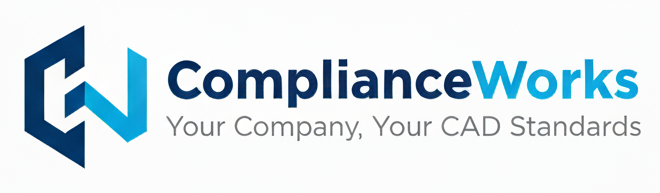
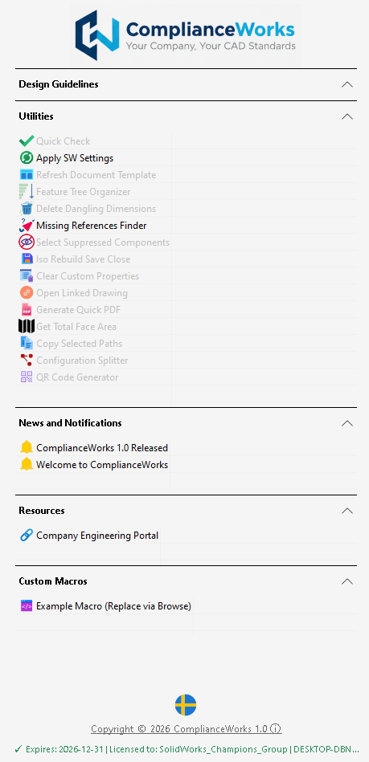
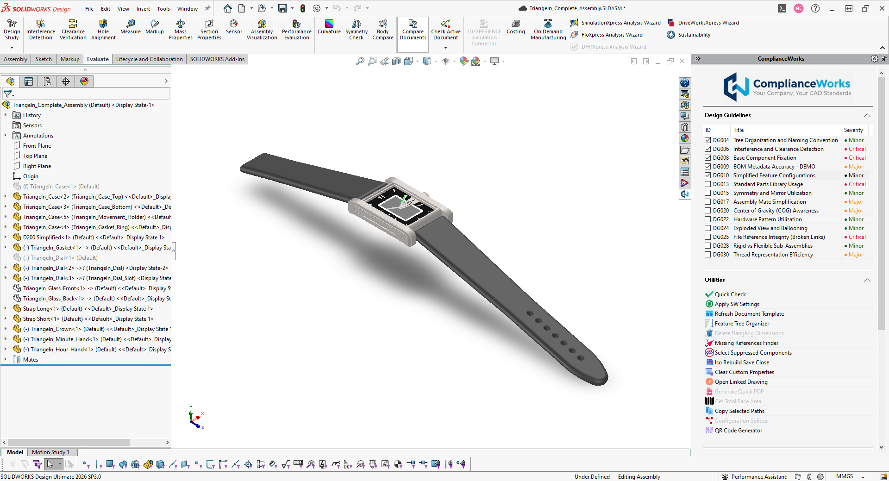
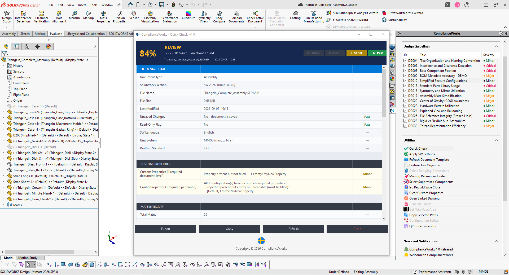
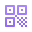

A SolidWorks add-in that keeps every engineer on the same standards - automatically.
ONE COMMON SOLIDWORKS FOR ALL.
The Problem
Every engineering team has standards. But keeping those standards consistent across the team is a nightmare. A new hire joins - someone has to sit down and walk them through every rule. A senior engineer leaves - that knowledge walks out the door with them. Standards update - you're emailing the whole team hoping everyone reads it. Someone works from home - their SolidWorks settings are different, their templates are different, nobody knows. The result: double work, rework, failed audits, and wasted hours reviewing drawings that should have been right the first time.
The Solution
ComplianceWorks lives inside SolidWorks as a task pane - always there, right next to the model, with no separate application to open or switch to. An admin defines the rules once - design guidelines, required settings, templates, macros, and resources - and publishes them to a single shared location, typically a network drive or cloud folder the team already uses.
Every user imports that location exactly once, from Tools menu > ComplianceWorks > Import. From that point on, every update the admin makes syncs automatically to the whole team - no reinstallation, no mass emails, no chasing people down to check they're on the latest version.
- New hires get the full rulebook on day one, inside the tool they already work in.
- A process changes once - a setting, a template, a macro - and it's live for everyone by their next session.
- Compliance gets checked as work happens, not caught later in review.

The task pane, live inside SolidWorks
Screenshots
ComplianceWorks, live inside SolidWorks.


What It Does
Design Guidelines
Your company's rules, right inside SolidWorks, in checklist format. Engineers tick them off as they work, saved directly to the document.
Standards-Based Approval
Every company defines its own CAD standards - ComplianceWorks checks files against those exact rules and marks them approved before release, so drawings and models shared with suppliers, partners, and customers always meet the same standard.
Utilities
A productivity suite built for daily use - Quick Check compliance scans, Feature Tree Organizer, Generate Quick PDF, QR Code Generator, and more. Fifteen tools, one click each.
Custom Macros
Your existing SolidWorks macros, surfaced directly in the task pane. No hunting through folders.
Resources
Links to your specs, standards, supplier portals, and network drives - always up to date because the admin controls them.
News & Notifications
Push announcements straight into the task pane. Publish a mandatory message and it's the first thing everyone sees the next time they open SolidWorks.
Centralized Admin
One control panel manages rules and configuration for the whole team, exported as a single JSON configuration file.
Automatic Sync & Updates
When the admin publishes a change, it reaches the whole team by their next SolidWorks session - no manual redistribution, no version drift, nobody left behind on an old configuration.
15+ Built-in Utilities
A full productivity toolkit, one click away in the task pane.

QR Code GeneratorDownload
Version 1.0 · Requires SolidWorks and Windows
ComplianceWorks Installer
MSI installer - installs and registers the add-in for SolidWorks.
Download Installer (.msi, 13.2 MB)User Guide
Full walkthrough of installation, the control panel, and every utility.
Download User Guide (PDF)ComplianceWorks isn't for sale - it's not a commercial product. Provided free for evaluation. Get in touch and I can provide a license key for a proof-of-concept trial with your team.
Access
ComplianceWorks is a personal project, built and shared without any commercial intent - I'm not looking to profit from it. If you'd like to try it with your team, get in touch and I can provide a license key for a free evaluation.